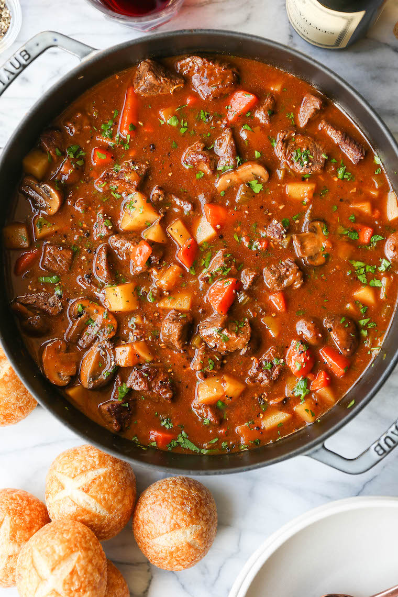

Stew

Description
A cozy, classic beef stew with tender beef, carrots, mushrooms and potatoes.
Everyone will love this, especially on those chilly nights!
Ingredients
- 2 tablespoons olive oil
- 2 poounds top sirloin steak, diced
- Kosher salt and freshly ground black pepper, to taste
- 1 medium sweet onion, diced
- 2 large carrots, peeeled and diced
- 2 celery ribs, diced
- 3 cloves garlic, minced
- 8 ounces cremini muchrooms, halved
- 3 tablespoons all-purpose flour
- 2 tablespoons tomato paste
- 1/2 cup of dry red wine
- 2 1/2 cups beef stock
- 4 sprigs fresh thyme
- 2 bay leaves
- 1 large russet potato, peeled and cut in 1/2-inch chunks
- 2 tablespoons chopped fresh parsley leaves
Steps
- Heat olive oil in a large stockpot or Dutch oven over medium heat.
Season steak with 1 teaspoin salt and 1/2 teaspoon pepper. Working
in batches, add steak to the stockpot and cook, stirring occasionally,
until evenly browned,
about 6-8 minutes; set aside.
- Add onion, carrots and celery. Cook, stirring occasionaly, until tender
and browned, about 3-4 minutes.
- Add garlic and mushrooms, and cook, stirring occasionally, until tender
and browned, about 3-4 minutes.
- Whisk in flour and tomato paste until ightly browned, about 1 minute.
- Stir in wine, scraping any browned bits from the bottom of the stockpot.
- Stir in beef stock, thyme, bay leaves and steak. Bring to a boil; reduce
heat and simmer until beef is very tender, about 30 minutes.
- Stir in potato; simmer until potatoes are just tender and stew has thickened,
about 20 minutes. Remove and discard thyme sprigs and bay leaves. Stir in parsley;
season with salt and pepper, to taste.
- Serve immediately.
Recipe from https://damndelicious.net/2020/02/29/best-ever-beef-stew/